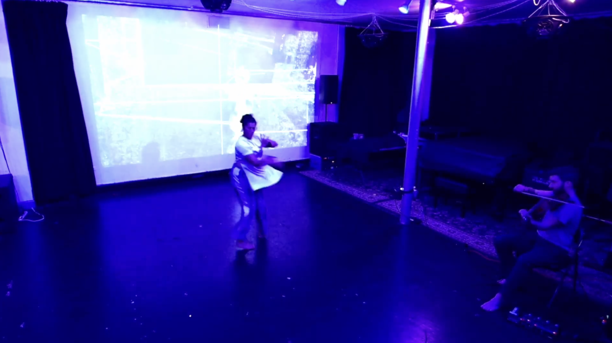
Ritual is
for movement artist, viola, and live audio-visual electronics
with Tuli Bera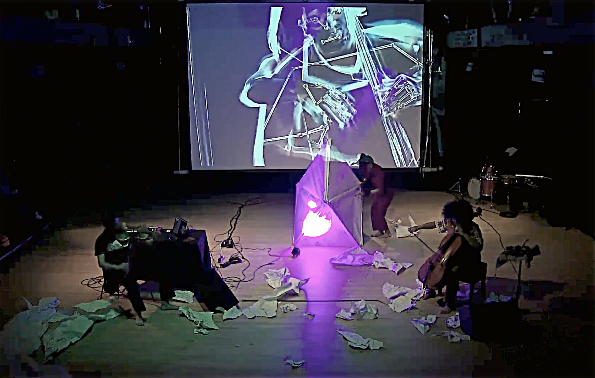
Wonder Turner
for movement artist, viola, cello, and live audio-visual electronics
with Cristal Sabbagh and olula negre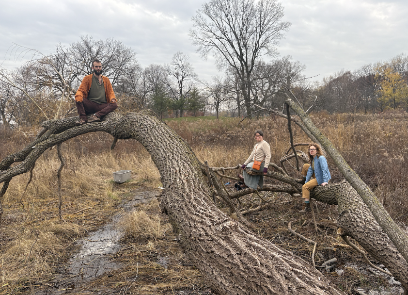
Ignorance, Denial, Conflict, and Abandonment
for piano, violin, and cello
with Missing Piece and Cacie Miller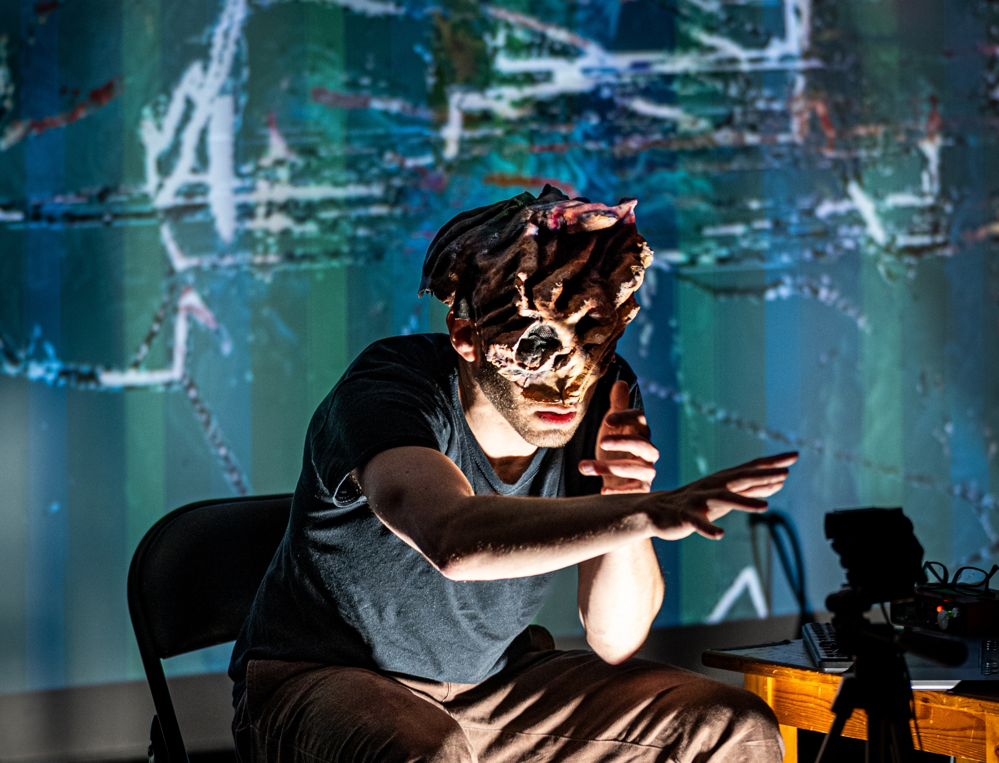
Digital Hands
for masked solo performer and live audio-visual electronics
 " alt="Seems Like a Portal">
" alt="Seems Like a Portal">
Seems Like a Portal
Opera for dancer, 4 musicians, and live audio-visual electronics
with Christine Saulut and Between Feathers Ensemble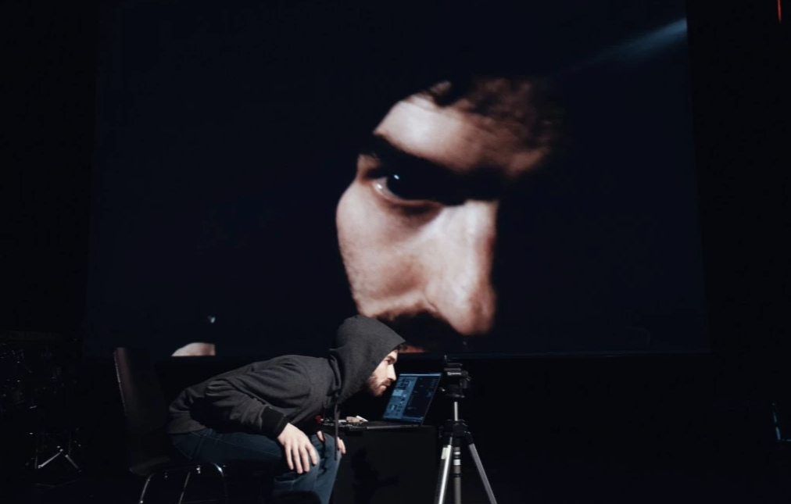
Solo Set
for solo viola and live audio-visual electronics
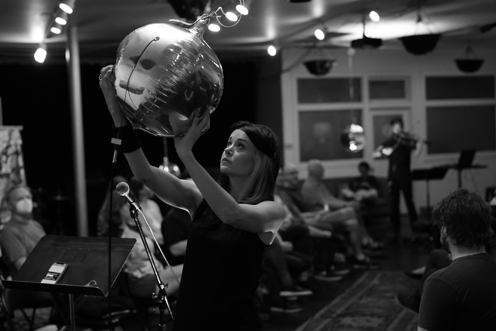
Finding Common Time
for 2 performers
with Rin Peisert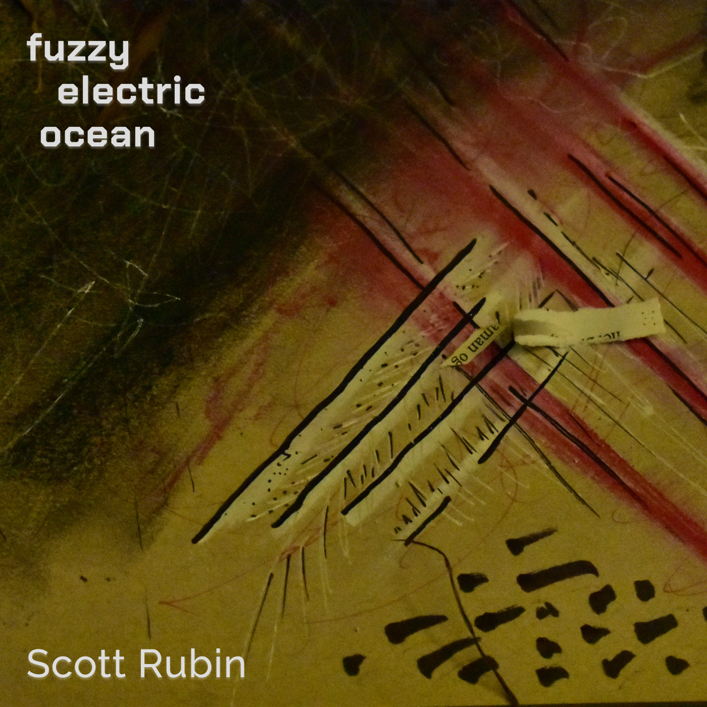
Fuzzy Electric Ocean
2-channel acousmatic
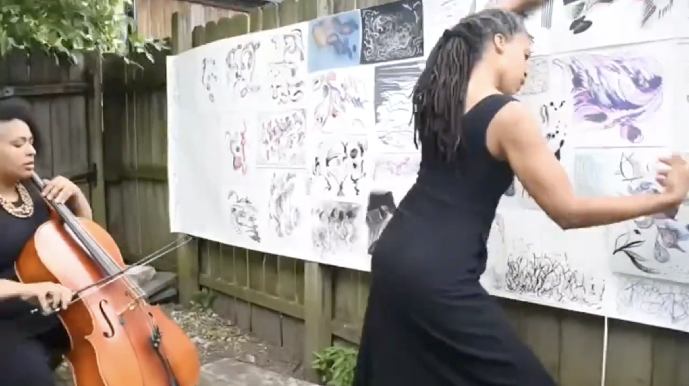
Sowing Asynchronicities
film with movement, dance, and live drawing
with Cristal Sabbagh and olula negre
Dances and Meditations
2-channel acousmatic

for the performers
for 2 dancers and 3 musicians
for Catchpenny Ensemble, Yuri Shimaoka, and Tatiana Matveeva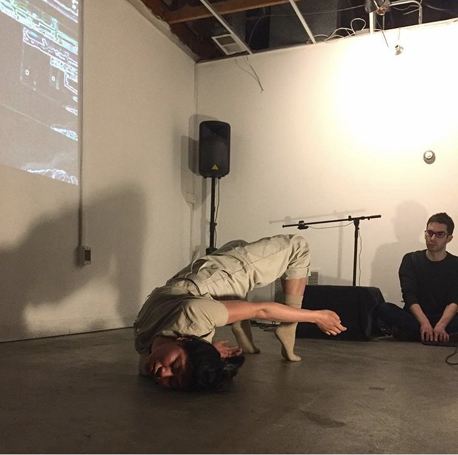
bdynse
for dancer, technician, and live audio-visual environment
with Jubilee Tai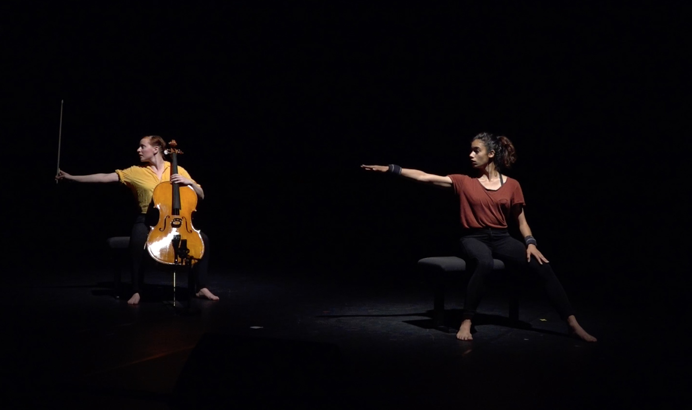
in tensions
for cello, dancer, and live electronics
for Polina Streltsova and Marie Albert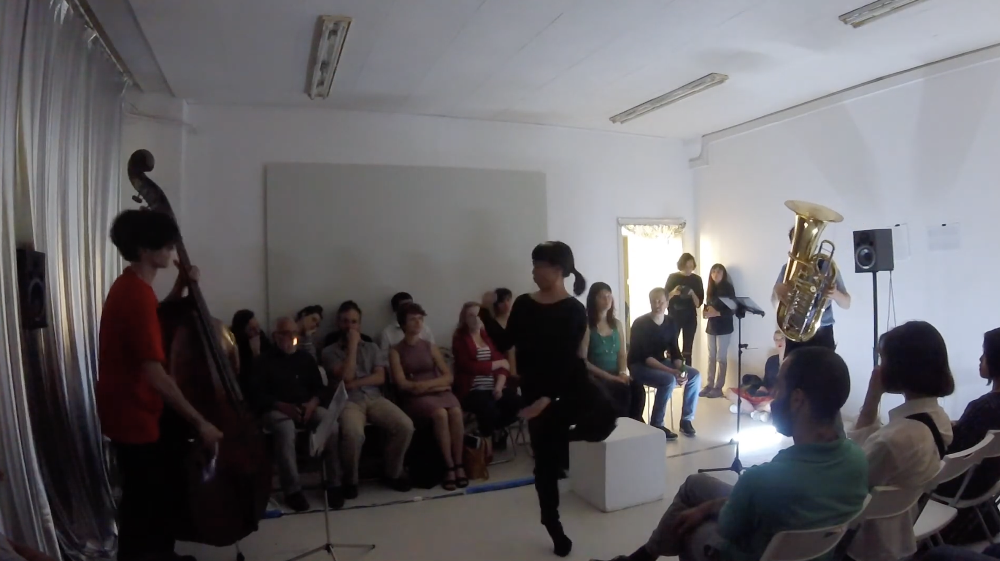
ironic erratic erotic
for dancer, tuba, and contrabass
Yuri Shimaoka, Jack Adler-McKean, and Adam Goodwin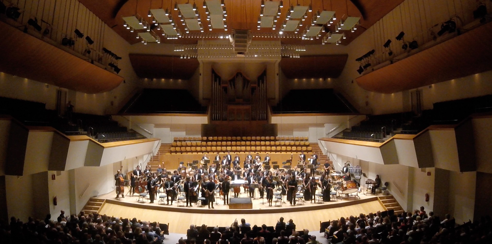
Kerosene Palace
for orchestra and electronics
University of California, Berkeley Symphony Orchestra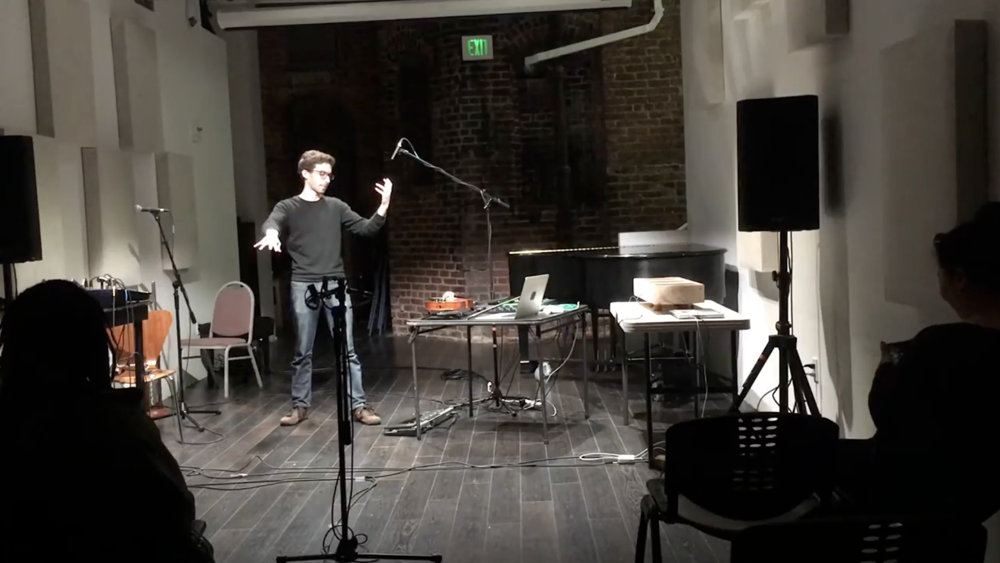
senses
ongoing project for improvisors and motion-sensitive live electronics
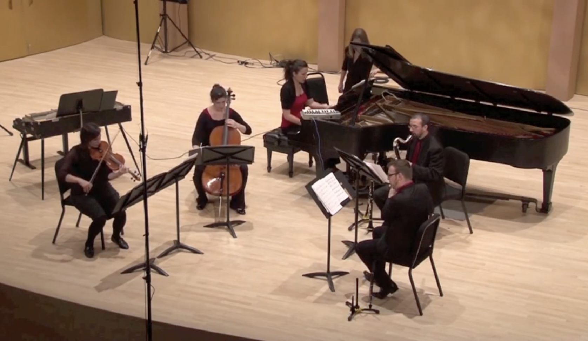
the Torn Cubist
for violin, cello, flute, clarinet, and piano
for Ensemble Paramirabo